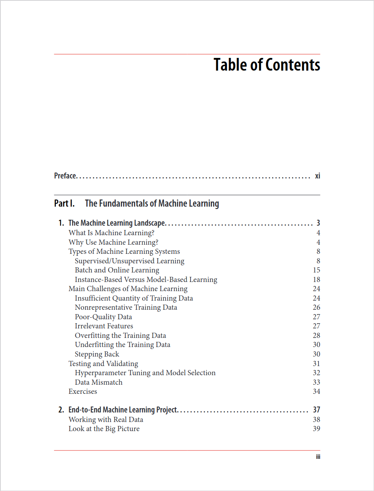
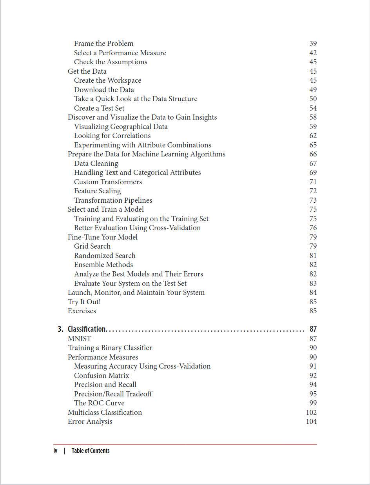
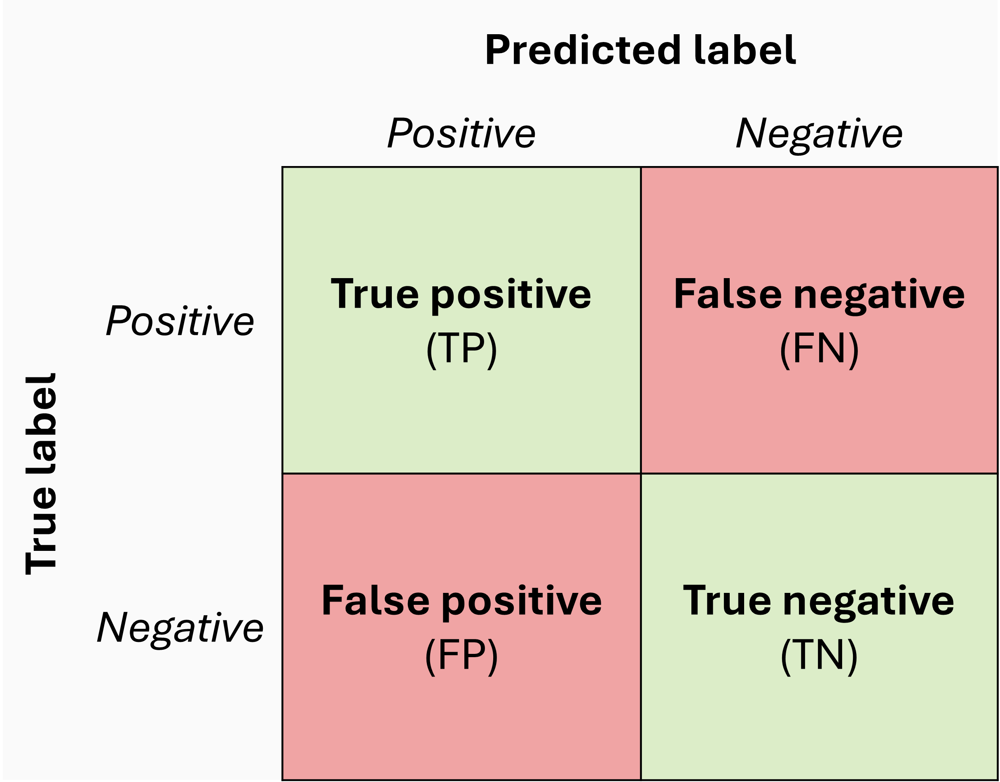
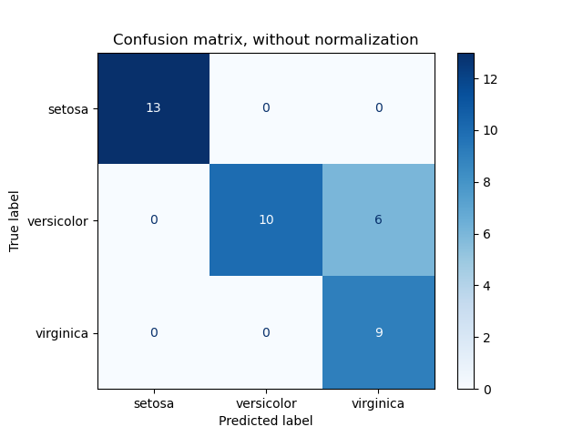
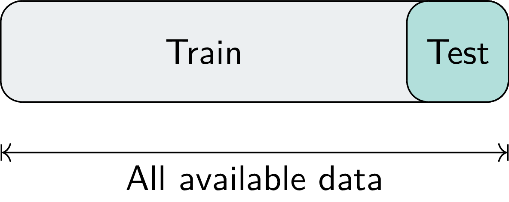
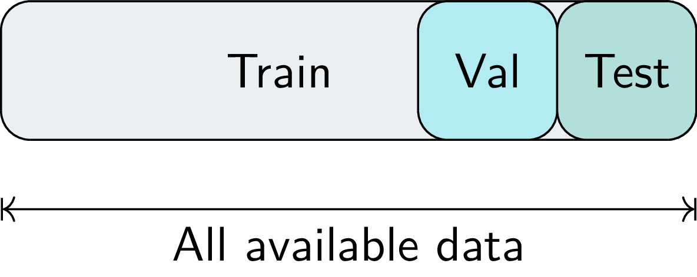
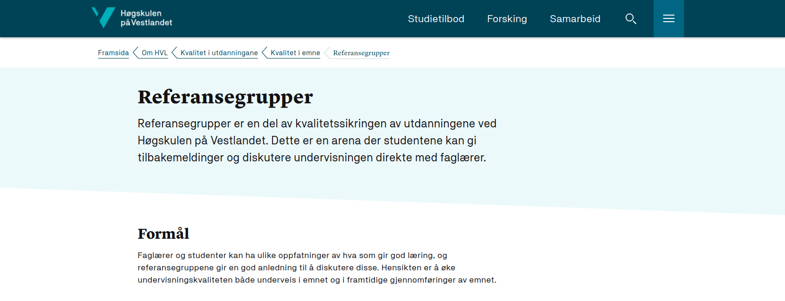

DAT158: Machine Learning Engineering and Advanced Algorithms
Module 1 - Introduction to Machine Learning



Machine learning engineering

- Study the problem 🔍
- Exploratory data analysis
- Domain knowledge
- Data preparation
- Train ML model 💻
- Algorithm/software development
- Evaluate 📈
- Metric selection
- Model selection
- Uncertainty quantification
- Launch 🚀 / Analyse errors ❌
- Deployment
- Diagnostics and visualisation
Model training
Details of different ML models is the topic for Module 2
For now, let’s represent a generic ML model as a function \(\color{Purple}{f}\):
\[ \large \hat{\color{DarkBlue}{y}} = \color{Purple}{f}(\color{DarkOrange}{\mathbf{x}}, \boldsymbol{\color{teal}{\theta}}) \]
where
- \(\hat{\color{DarkBlue}{y}}\) is the prediction
- \(\color{DarkOrange}{\mathbf{x}}\) is a data point
- \(\boldsymbol{\color{teal}{\theta}}\) are parameters of the model
Training is the process of finding the best parameters \(\boldsymbol{\color{teal}{\theta}}\) so that the prediction \(\hat{\color{DarkBlue}{y}}\) is as close as possible to the known target value \(\color{DarkBlue}{y}\).
Model training
Details of different ML models is the topic for Module 2
For now, let’s represent a generic ML model as a function \(\color{Purple}{f}\):
\[ \large \hat{\color{DarkBlue}{y}} = \color{Purple}{f}(\color{DarkOrange}{\mathbf{x}}, \boldsymbol{\color{teal}{\theta}}) \]
Training is the process of finding the best parameters \(\boldsymbol{\color{teal}{\theta}}\) so that the prediction \(\hat{\color{DarkBlue}{y}}\) is as close as possible to the known target value \(\color{DarkBlue}{y}\).
scikit-learn API:
Evaluation
How well does the model perform?
To answer this we need a metric that quantifies performance.
Classification:
“How many did we label correctly?”
Useful metrics:
- Accuracy
- Precision
- Recall
- ROC curve
Regression:
“How close did we get?”
Useful metrics:
- Mean squared error (MSE)
- Root mean squared error (RMSE)
- Mean absolute error (MAE)
Consult scikit-learn docs for more metrics and description
The confusion matrix
The outcomes of our predictions can be illustrated by the confusion matrix:

The different classification performance metrics can all be defined from these entries
Metrics recap
Accuracy:
“How many did we get right?”
\(\small\mathrm{accuracy} = \frac{\mathrm{\color{Green}{TP + TN}}}{\mathrm{\color{Purple}{TP + TN + FP + FN}}}\)
Precision:
“How many false positives did we avoid?”
\(\small\mathrm{precision} = \frac{\mathrm{\color{Green}{TP}}}{\mathrm{\color{Purple}{TP + FP}}}\)
Recall:
“How many true positives did we get right?”
\(\small\mathrm{recall} = \frac{\mathrm{\color{Green}{TP}}}{\mathrm{\color{Purple}{TP + FN}}}\)
Computing metrics
scikit-learn has implemented a long list of metrics
>>> from sklearn.metrics import accuracy_score, confusion_matrix
>>> y_pred = [0, 0, 1, 0, 1, 1]
>>> y_true = [0, 0, 0, 1, 0, 1]
>>> accuracy_score(y_true, y_pred)
0.5
>>> confusion_matrix(y_true, y_pred)
array([[2, 2],
[1, 1]])
>>> Confusion matrix can be plotted easily using ConfusionMarixDisplay
Setting thresholds
Google for Developers: Accuracy, precision, recall
Multiclass classification
Things change a bit when we consider tasks with more than two classes
Accuracy: Still means ratio of correct predictions, but let’s redefine as
\[ \small \mathrm{accuracy}(y, \hat{y}) = \frac{1}{N} \sum_{i=1}^{N} \unicode{x1D7D9}(y = \hat{y}), \qquad \unicode{x1D7D9}(i,j) = \begin{cases} 1, & i = j \\ 0, & i \neq j \end{cases} \]
- Precision and recall: Only make sense in binary setting, but:
- We can compute these for “one class vs the rest”, and average results for each class
- Confusion matrix: No change

Train-test split
Evaluating a model should be done on an independent data set
(we want to know how well it performs on new, unseen data)
Typically we set aside a part of the data, and use this only for final evaluation.

Train-validation-test split
Model selection
- In case we want to compare different models, we need a third set:
The validation set - The test set is still only for final evaluation

ML models are prone to overfitting – i.e. memorising the training data.
How do we know if (when) this happens?
- Can compare performance on the training set to the validation set
Cross-validation
We can do even better estimates by rotating the training data:

Cross-validation (cont.)
Serving an ML model
?
Serving an ML model
Option 1: Local
Model runs on user hardware
- Pros:
- No server hardware
- No network connection needed
- Data stays with user
Cons:
Model may need to be- Compressed
- Simplified
- Encrypted
Option 2: Central
Model runs on server, user interacts via webpage / API
- Pros:
- No limits on model complexity
- Model updates are seamless (to user)
- Cons:
- Need low-latency network
- User loses control over data
Some hosting services: Gradio
Some hosting services: Streamlit
Mandatory exercise after Module 1
Part 1: Concepts and theory
Multiple-choice quiz about topics from the textbook, lectures, and exercises (notebooks)
Part 2: Hands-on
Kaggle competition:
Compete against each other in making the best predictions 😎
We use the Kaggle platform to host the competition and leaderboard
(competition is open only to us)
Proposed deadline:
Open the competition Sept. 6,
close on Sept 20 (two weeks)
Referansegruppe
